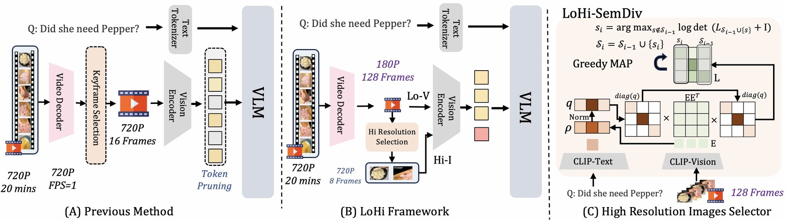

Rethinking Long-Video Efficiency: A Joint Allocation Perspective on Frames, Pixels, and Front-End Latency
Trade pixels for frames. Decode half as many. Answer faster and better.
1University of Central Florida 2Meta Reality Labs 3Axon · ✉ corresponding author
We are building longvideo-eval, an open-source harness that evaluates long-video VLMs and efficiency methods on one accuracy–cost axis, with decoding, vision encoding and prefill all measured. LoHi will be released as part of it.
Efficient long-video VLMs usually ask which tokens to keep at native resolution. We ask how to spend a fixed budget across frame count, per-frame resolution, and front-end decoding. Three lessons answer it. Every VLM spends a fixed visual-token budget B on one configuration (N, r): N frames at per-frame resolution scale r, with N · τ(r) ≤ B. Before the tokens ever reach the model, a video front-end must decode those frames from the compressed file. Play with each lesson below.
At the same token budget, 256 frames at ¼ resolution beat 16 frames at native resolution, and beat dedicated keyframe-selection and token-pruning methods too. We call this Low-Res-Base.
Numbers: Qwen3-VL-4B, VideoMME (w/o subtitles). TTFT is measured on an H100 and includes CPU decoding; the vanilla 16-frame row has no TTFT entry in the paper. Keyframe selection shows BOLT, the strongest keyframe method; token pruning shows FlashVid.
Shrinking a frame is surprisingly cheap: people, actions and the layout of a scene survive long after the pixels get blocky, and the VLM keeps up. Fine text and small attributes do not. Turn the dial and watch what disappears first.
The frame is a synthetic illustration rendered in your browser; accuracy numbers are from the paper (Qwen3-VL-4B, VideoMME). Scales below 0.25 are shown only to build intuition and were not evaluated.
A video file is not a stack of pictures. Codecs store a full I-frame at the start of each Group of Pictures (GoP), and every following P-frame only stores what changed since the previous frame. To show any P-frame, the decoder must start at its I-frame and replay every frame in between.
Dense sampling touches every GoP and grows with video length. Uniform sampling of a fixed N caps both.
Decode-then-select keyframe methods (AKS, BOLT, CLIP top-K) first build a candidate pool by densely decoding the video, then score it. On a one-hour clip the decoder alone runs for tens of seconds while the GPU sits idle. Token pruning decodes 256 native-resolution frames and runs the full vision encoder before discarding 93.75% of tokens.
LoHi bounds the pool: it decodes exactly N = 128 frames once, regardless of length, and reuses them at two resolutions. LoHi-Anchor even reads I-frame positions as a free scene-change hint, without decoding extra pixels.
LoHi splits one configuration (N, r) into two complementary streams that share one budget and one decoding pass, and routes them through the VLM's own video and image pathways. Training-free, single forward pass, no architectural change.

Picks the K Hi-I frames at regular intervals directly from the Lo-V grid. Pure indexing, and the fundamental baseline of the framework.
Encoders start GoPs with I-frames, which can align with scene changes or strong motion. For each uniform position, Anchor finds the nearest I-frame from pre-computed indices and selects the Lo-V grid frame closest to it, with no additional pixel decoding.
A quality–similarity DPP over CLIP embeddings: L = diag(q) EE⊤ diag(q), with q the sharpened query relevance. Greedy maximization of log det(LS + I) picks frames that are both query-relevant and mutually diverse, with a (1 − 1/e) guarantee.
Qwen3-VL-4B, every method at the token budget of the default 16-frame recipe (~5,760 tokens). Keyframe selection and token pruning decode 256 native-resolution frames; LoHi decodes 128.
| Method | Decoded frames | VideoMME | MLVU | LVBench | Avg. |
|---|---|---|---|---|---|
| Qwen3-VL-4B, 16F@1.0 | 16 | 57.78 | 58.89 | 38.61 | 51.76 |
| Low-Res-Base, 256F@0.25 | 256 | 64.44 | 69.36 | 43.71 | 59.17 |
| Keyframe selection (best: BOLT) | 256 → 16 | 60.81 | 68.11 | 42.48 | 57.13 |
| Token pruning (best: FlashVid) | 256 | 59.30 | 63.70 | 34.09 | 52.36 |
| LoHi-Uniform | 128 | 65.78 | 67.62 | 44.09 | 59.16 |
| LoHi-Anchor | 128 | 65.89 | 68.40 | 44.42 | 59.57 |
| LoHi-SemDiv | 128 | 66.81 | 74.38 | 45.90 | 62.36 |
LoHi-SemDiv improves the average over the default recipe by +10.6 and over the strongest prior method by +5.2. The blog has the full tables: every baseline, latency breakdown, token pruning vs. resize, ablations and five more backbones.
@inproceedings{dong2026lohi,
title = {Rethinking Long-Video Efficiency: A Joint Allocation Perspective on Frames, Pixels, and Front-End Latency},
author = {Dong, Sixun and Li, Wei and Deng, Andong and Qian, Qi and Zhu, Victor and Ji, Zhengping and Chen, Chen},
booktitle = {Advances in Neural Information Processing Systems (NeurIPS)},
year = {2026},
url = {https://openreview.net/forum?id=a9xLyT4hG4}
}
Questions or collaboration: sixundong.ai@gmail.com